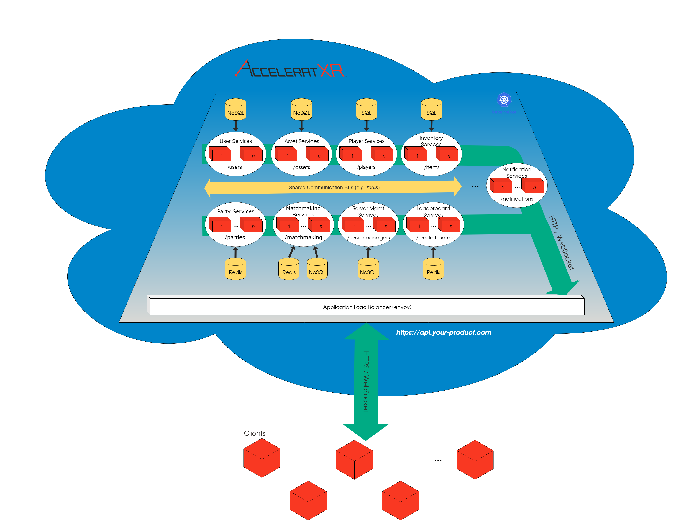

Architecture¶
The AcceleratXR platform utilizes a micro-services <https://en.wikipedia.org/wiki/Microservices> based architecture composed of more than 15 unique services. Each of these services provides a singularly focused set of functionality within the platform. Functionality such as user account management (acount-services <https://gitlab.com/AcceleratXR/Core/account_services>), player achievements (achievement-services <https://gitlab.com/AcceleratXR/Core/achievements_services>), virtual economy (economy-services <https://gitlab.com/AcceleratXR/Core/economy_services>), matchmaking (matchmaking-services <https://gitlab.com/AcceleratXR/Core/matchmaking_services>) and more.
True to micro-service principles each service within the platform maintains strict database access isolation and uses a post/push methodology for performing write operations and delivering changes. As a result, no two services will have access to the same database content. All write operations must be performed through a service’s REST API. Data changes are then distributed either via REST API polling or via push messaging. Push data is sent to other services via a common messaging bus such as redis <https://redis.io/> while clients can optionally register for notifications to be delivered via a secured websocket <https://en.wikipedia.org/wiki/WebSocket> connection.
Authentication is managed using a distributed JSON Web Token <https://jwt.io/> with each service having the capability to decode and verify any given access token. The JWT access token contains all relevant information for a service to be able to perform work on behalf of a given user including any relevant permissions and roles.
While the platform can be deployed using a variety of different methods Kubernetes <https://kubernetes.io/> has been selected as the preferred orchestration system due to its powerful features, simplicity and ability to run in virtually any environment.
In order to provide a unified set of endpoints for communicating with the platform nginx <https://www.nginx.com/> is utilized as the primary load balancer and reverse proxy for all of AcceleratXR’s backend services.
Lastly, the Prometheus <https://prometheus.io/> server is leveraged for gathering real-time statistics as well as providing Kubernetes with the necessary metrics for performing automatic scaling of individual services.